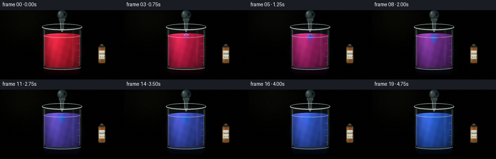
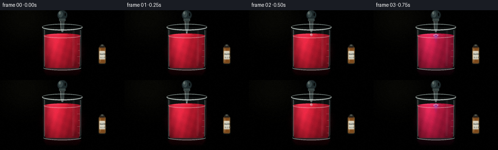
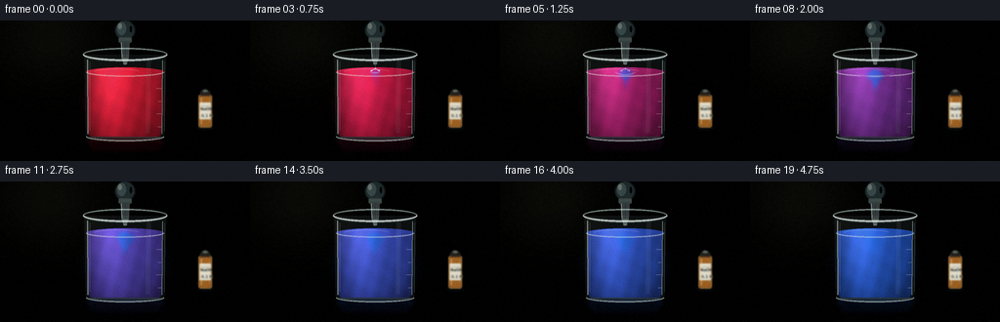
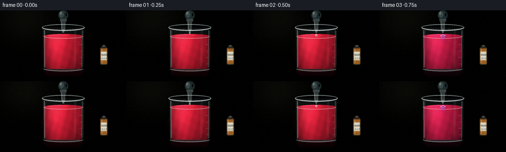
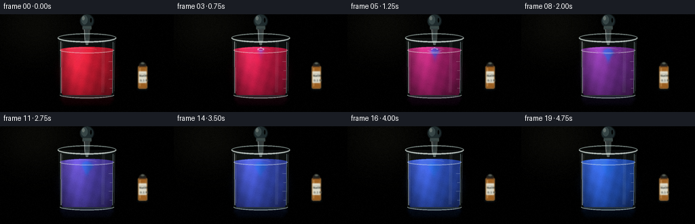
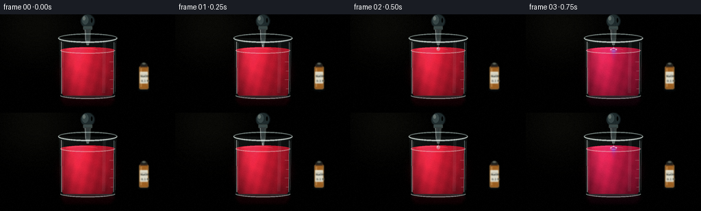

CODING AGENTS AS PIXEL WORLD MODELS
traex/DeepSeek-V4.1-Flash · material_0031
点击播放 · 原生 RGB 像素
此结果可播放，但该运行尚未通过最终提交审核。页面展示不代表评测通过。
逐轮保存的候选
回放视频、检查图与代码变化。
每份候选均可单独播放。实际图片检查记录在下方工具轨迹中。
候选 01播放与检查图
点击播放 · 原生 RGB 像素


展开代码变化
--- 上一保存版本
+++ 本次保存版本
@@ -0,0 +1,568 @@
+from pathlib import Path
+import math
+
+import numpy as np
+from PIL import Image, ImageDraw, ImageFilter, ImageFont
+
+import artifact_io
+
+
+W, H = 256, 144
+FPS = 4
+N = 20
+SS = 3
+RW, RH = W * SS, H * SS
+
+ROOT = Path(__file__).resolve().parent
+
+
+def sc(v):
+ return int(round(v * SS))
+
+
+def bx(x0, y0, x1, y1):
+ return [sc(x0), sc(y0), sc(x1), sc(y1)]
+
+
+def alpha_layer():
+ return Image.new("RGBA", (RW, RH), (0, 0, 0, 0))
+
+
+def composite(base, layer):
+ return Image.alpha_composite(base.convert("RGBA"), layer).convert("RGB")
+
+
+def vertical_gradient(stops, cols):
+ y = np.linspace(0.0, 1.0, RH, dtype=np.float32)
+ out = np.empty((RH, 3), dtype=np.float32)
+ for channel in range(3):
+ out[:, channel] = np.interp(y, stops, cols[:, channel])
+ return np.repeat(out[:, None, :], RW, axis=1)
+
+
+def make_background():
+ stops = np.array([0.0, 0.28, 0.64, 0.82, 1.0], dtype=np.float32)
+ cols = np.array(
+ [
+ [42, 58, 63],
+ [73, 94, 94],
+ [127, 141, 132],
+ [82, 93, 85],
+ [29, 37, 39],
+ ],
+ dtype=np.float32,
+ )
+ arr = vertical_gradient(stops, cols)
+
+ yy, xx = np.mgrid[0:RH, 0:RW].astype(np.float32)
+ xn = xx / (RW - 1)
+ yn = yy / (RH - 1)
+ key = np.exp(-(((xn - 0.20) / 0.30) ** 2 + ((yn - 0.16) / 0.38) ** 2))
+ fill = np.exp(-(((xn - 0.73) / 0.34) ** 2 + ((yn - 0.45) / 0.42) ** 2))
+ arr += key[:, :, None] * np.array([31, 33, 25], dtype=np.float32)
+ arr += fill[:, :, None] * np.array([9, 13, 12], dtype=np.float32)
+
+ horizon = 112.0
+ table = yy >= horizon * SS
+ table_y = np.clip((yy / SS - horizon) / (H - horizon), 0.0, 1.0)
+ table_col = np.array([73, 81, 75], dtype=np.float32)[None, None, :] * (
+ 1.0 - table_y[:, :, None]
+ ) + np.array([24, 31, 33], dtype=np.float32)[None, None, :] * table_y[:, :, None]
+ arr[table] = table_col[table]
+
+ reflection = np.exp(-(((xn - 0.5) / 0.24) ** 2 + ((yn - 0.87) / 0.065) ** 2))
+ arr += reflection[:, :, None] * np.array([14, 17, 15], dtype=np.float32)
+
+ edge = np.sqrt(((xn - 0.5) / 0.57) ** 2 + ((yn - 0.48) / 0.58) ** 2)
+ vig = np.clip((edge - 0.52) / 0.72, 0.0, 1.0)
+ arr *= (1.0 - 0.34 * vig[:, :, None])
+
+ img = Image.fromarray(np.clip(arr, 0, 255).astype(np.uint8), "RGB")
+ layer = alpha_layer()
+ d = ImageDraw.Draw(layer)
+ d.line([0, sc(112.2), RW, sc(112.2)], fill=(218, 226, 211, 30), width=sc(0.65))
+ d.line([0, sc(113.1), RW, sc(113.1)], fill=(18, 24, 26, 70), width=sc(0.7))
+
+ d.line([sc(20), sc(25), sc(122), sc(25)], fill=(217, 223, 208, 18), width=sc(0.7))
+ d.line([sc(20), sc(25.8), sc(122), sc(25.8)], fill=(24, 31, 31, 28), width=sc(0.55))
+ return composite(img, layer)
+
+
+def draw_background_bottle(base):
+ layer = alpha_layer()
+ d = ImageDraw.Draw(layer)
+
+ d.ellipse(bx(201.0, 107.0, 219.0, 113.0), fill=(5, 8, 9, 95))
+ d.rounded_rectangle(
+ bx(203.2, 76.0, 216.8, 109.2),
+ radius=sc(2.1),
+ fill=(92, 54, 23, 185),
+ outline=(219, 167, 92, 95),
+ width=sc(0.75),
+ )
+ d.rounded_rectangle(
+ bx(204.5, 78.0, 215.5, 108.0),
+ radius=sc(1.5),
+ fill=(132, 78, 30, 90),
+ )
+ d.rectangle(bx(205.0, 73.0, 215.0, 77.0), fill=(52, 39, 29, 235))
+ d.rounded_rectangle(
+ bx(205.7, 71.6, 214.3, 75.5),
+ radius=sc(1.0),
+ fill=(29, 31, 29, 245),
+ )
+ d.ellipse(bx(207.2, 70.5, 212.8, 73.2), fill=(93, 99, 89, 210))
+
+ d.rounded_rectangle(
+ bx(204.4, 84.1, 215.7, 101.1),
+ radius=sc(0.7),
+ fill=(225, 222, 205, 225),
+ )
+ d.line([sc(205.1), sc(87.4), sc(215.0), sc(87.4)], fill=(127, 122, 105, 120), width=sc(0.4))
+
+ try:
+ font = ImageFont.truetype(
+ "/usr/share/fonts/truetype/dejavu/DejaVuSans-Bold.ttf", sc(4.15)
+ )
+ except OSError:
+ font = ImageFont.load_default()
+ d.text((sc(205.0), sc(88.0)), "NaOH", font=font, fill=(28, 35, 33, 235))
+ d.text((sc(206.1), sc(95.1)), "0.1 M", font=font, fill=(62, 70, 66, 205))
+
+ highlight = Image.new("RGBA", (RW, RH), (0, 0, 0, 0))
+ hd = ImageDraw.Draw(highlight)
+ hd.line(
+ [sc(206.0), sc(79.0), sc(206.0), sc(106.0)],
+ fill=(246, 213, 159, 72),
+ width=sc(1.15),
+ )
+ hd.line(
+ [sc(214.3), sc(80.0), sc(214.3), sc(104.0)],
+ fill=(255, 225, 172, 24),
+ width=sc(0.7),
+ )
+ layer = composite(layer, highlight).convert("RGBA")
+ layer = layer.filter(ImageFilter.GaussianBlur(sc(0.7)))
+ return composite(base, layer)
+
+
+def build_dye_records():
+ native_y, native_x = np.mgrid[0:H, 0:W].astype(np.float32)
+ dye = np.zeros((H, W), dtype=np.float32)
+ records = []
+
+ def sample(arr, sx, sy):
+ x0 = np.floor(sx).astype(np.int32)
+ y0 = np.floor(sy).astype(np.int32)
+ fx = sx - x0
+ fy = sy - y0
+ x1 = np.clip(x0 + 1, 0, W - 1)
+ y1 = np.clip(y0 + 1, 0, H - 1)
+ x0 = np.clip(x0, 0, W - 1)
+ y0 = np.clip(y0, 0, H - 1)
+ return (
+ arr[y0, x0] * (1.0 - fx) * (1.0 - fy)
+ + arr[y0, x1] * fx * (1.0 - fy)
+ + arr[y1, x0] * (1.0 - fx) * fy
+ + arr[y1, x1] * fx * fy
+ )
+
+ for frame in range(N):
+ if frame >= 3:
+ age = frame - 3
+ dx = native_x - 128.0
+ dy = native_y - 53.0
+ r2 = dx * dx + dy * dy
+ vortex = np.exp(-r2 / 760.0)
+ vx = -0.018 * dy * vortex
+ vx += 0.23 * np.sin(native_y * 0.25 + frame * 0.62) * np.exp(-r2 / 1050.0)
+ vy = 0.026 * dx * vortex
+ vy += 0.54 * np.exp(-((native_x - 128.0) / 12.0) ** 2) * np.exp(
+ -np.clip((native_y - 54.0) / 62.0, 0.0, 1.0)
+ )
+ dye = sample(dye, native_x - vx, native_y - vy)
+ dye *= 0.987
+
+ if frame <= 11:
+ cx = 128.0 + 1.05 * math.sin(age * 1.1)
+ cy = 53.0 + 0.78 * age
+ blob = np.exp(
+ -((native_x - cx) ** 2 / (2.0 * 4.0**2) + (native_y - cy) ** 2 / (2.0 * 3.0**2))
+ )
+ tail = np.exp(
+ -((native_x - cx) ** 2 / (2.0 * 2.0**2) + (native_y - cy - 5.0) ** 2 / (2.0 * 5.5**2))
+ )
+ dye += (0.62 * blob + 0.28 * tail) * (1.0 - 0.045 * age)
+ dye = np.clip(dye, 0.0, 1.0)
+
+ mix = 1.0 - math.exp(-0.19 * max(0, frame - 2))
+ local = 0.74 * dye
+ concentration = 1.0 - (1.0 - mix) * (1.0 - local)
+ concentration = np.clip(concentration, 0.0, 1.0)
+ records.append(concentration.astype(np.float32))
+
+ return records
+
+
+def upscale_field(field):
+ image = Image.fromarray(field.astype(np.float32), mode="F")
+ image = image.resize((RW, RH), Image.Resampling.BICUBIC)
+ return np.asarray(image, dtype=np.float32)
+
+
+def liquid_geometry():
+ yy, xx = np.mgrid[0:RH, 0:RW].astype(np.float32)
+ x = (xx + 0.5) / SS
+ y = (yy + 0.5) / SS
+
+ surface_rx = 38.0
+ surface_cy = 52.6
+ surface_ry = 4.65
+ normalized = np.clip(1.0 - ((x - 128.0) / surface_rx) ** 2, 0.0, 1.0)
+ surface_front = surface_cy + 2.15 * np.sqrt(normalized)
+
+ left = 91.0 + 0.012 * (y - 35.0)
+ right = 165.0 - 0.012 * (y - 35.0)
+ bottom_t = np.clip((y - 113.8) / 6.0, 0.0, 1.0)
+ left = left + 3.0 * bottom_t**2
+ right = right - 3.0 * bottom_t**2
+
+ body = (y >= surface_front) & (y <= 118.9) & (x >= left) & (x <= right)
+ surface = ((x - 128.0) / surface_rx) ** 2 + ((y - surface_cy) / surface_ry) ** 2 <= 1.0
+ surface &= (x >= 90.2) & (x <= 165.8)
+ mask = body | surface
+ return x, y, mask, surface, surface_cy, surface_rx, surface_ry
+
+
+def render_liquid(base, concentration):
+ x, y, mask, surface, surface_cy, surface_rx, surface_ry = liquid_geometry()
+ c = upscale_field(concentration)
+
+ stops = np.array([0.0, 0.18, 0.42, 0.68, 0.86, 1.0], dtype=np.float32)
+ palette = np.array(
+ [
+ [207, 27, 50],
+ [198, 24, 66],
+ [167, 29, 99],
+ [119, 43, 145],
+ [67, 66, 177],
+ [24, 91, 201],
+ ],
+ dtype=np.float32,
+ )
+ colors = np.empty((RH, RW, 3), dtype=np.float32)
+ for channel in range(3):
+ colors[:, :, channel] = np.interp(c, stops, palette[:, channel])
+
+ depth = np.clip((y - surface_cy) / (119.0 - surface_cy), 0.0, 1.0)
+ vertical = 1.07 - 0.42 * depth
+ cylindrical = (
+ 0.76
+ + 0.34 * np.exp(-((x - 114.0) / 17.5) ** 2)
+ + 0.08 * np.clip(1.0 - ((x - 128.0) / 38.0) ** 2, 0.0, 1.0)
+ )
+ edge = 0.84 + 0.16 * np.clip(1.0 - (np.abs(x - 128.0) / 39.0) ** 3, 0.0, 1.0)
+ light = vertical * cylindrical * edge
+
+ phase = float(np.mean(c) * 11.0)
+ caustic = 0.035 * np.sin(x * 0.44 + y * 0.11 + phase)
+ caustic += 0.020 * np.sin(x * 0.18 - y * 0.32 + phase * 0.7)
+ light = light + caustic
+ light += 0.08 * surface
+
+ colors *= light[:, :, None]
+ surface_glow = np.exp(-((x - 112.0) / 19.0) ** 2) * np.exp(-((y - 63.0) / 38.0) ** 2)
+ colors += surface_glow[:, :, None] * np.array([22, 16, 20], dtype=np.float32)
+ colors = np.clip(colors, 0, 255)
+
+ alpha = np.where(mask, 242, 0).astype(np.uint8)
+ rgba = np.dstack([colors.astype(np.uint8), alpha])
+ layer = Image.fromarray(rgba, "RGBA")
+ return composite(base, layer)
+
+
+def draw_beaker_back(base):
+ layer = alpha_layer()
+ d = ImageDraw.Draw(layer)
+
+ body = [(87.2, 35.0), (168.8, 35.0), (167.2, 117.0), (164.6, 121.2), (91.4, 121.2), (88.8, 117.0)]
+ d.polygon([(sc(px), sc(py)) for px, py in body], fill=(177, 213, 211, 18))
+ d.ellipse(bx(90.0, 114.4, 166.0, 123.0), fill=(183, 216, 211, 20))
+
+ d.arc(
+ bx(86.2, 28.0, 169.8, 41.2),
+ 182,
+ 358,
+ fill=(221, 243, 237, 135),
+ width=sc(1.5),
+ )
+ d.arc(
+ bx(87.3, 29.2, 168.7, 40.0),
+ 185,
+ 355,
+ fill=(92, 125, 125, 72),
+ width=sc(0.65),
+ )
+ d.line([sc(91.1), sc(41.0), sc(91.0), sc(115.8)], fill=(208, 235, 230, 45), width=sc(0.8))
+ d.line([sc(164.9), sc(41.0), sc(164.2), sc(115.8)], fill=(177, 216, 217, 42), width=sc(0.8))
+ return composite(base, layer)
+
+
+def draw_surface_details(base, frame):
+ layer = alpha_layer()
+ d = ImageDraw.Draw(layer)
+
+ d.arc(
+ bx(90.0, 48.0, 166.0, 57.2),
+ 0,
+ 180,
+ fill=(240, 248, 240, 135),
+ width=sc(0.85),
+ )
+ d.arc(
+ bx(91.0, 49.0, 165.0, 56.1),
+ 18,
+ 162,
+ fill=(255, 255, 249, 82),
+ width=sc(0.45),
+ )
+ d.arc(
+ bx(96.0, 49.5, 143.0, 55.8),
+ 188,
+ 344,
+ fill=(255, 250, 238, 58),
+ width=sc(0.55),
+ )
+
+ if 3 <= frame <= 9:
+ age = frame - 3
+ for ring in range(2):
+ radius_x = 3.2 + age * 2.9 + ring * 1.8
+ radius_y = 0.9 + age * 0.9 + ring * 0.5
+ alpha = int(max(0, 112 - age * 13 - ring * 22))
+ if alpha > 0:
+ d.arc(
+ bx(
+ 128.0 - radius_x,
+ 52.6 - radius_y,
+ 128.0 + radius_x,
+ 52.6 + radius_y,
+ ),
+ 0,
+ 180,
+ fill=(231, 249, 244, alpha),
+ width=sc(0.55),
+ )
+
+ if 3 <= frame <= 5:
+ drop_alpha = 215 if frame == 3 else 135
+ d.ellipse(bx(123.3, 50.6, 124.7, 52.0), fill=(237, 250, 246, drop_alpha))
+ d.ellipse(bx(131.5, 50.2, 133.1, 51.9), fill=(237, 250, 246, drop_alpha))
+ d.ellipse(bx(127.7, 48.7, 128.9, 50.1), fill=(245, 252, 249, drop_alpha))
+ d.arc(
+ bx(124.8, 49.2, 131.3, 54.6),
+ 188,
+ 352,
+ fill=(242, 251, 247, drop_alpha),
+ width=sc(0.55),
+ )
+ return composite(base, layer)
+
+
+def draw_glass_front(base):
+ layer = alpha_layer()
+ d = ImageDraw.Draw(layer)
+
+ d.line([sc(90.9), sc(40.0), sc(90.9), sc(116.0)], fill=(239, 250, 244, 98), width=sc(1.15))
+ d.line([sc(93.0), sc(42.0), sc(92.9), sc(113.0)], fill=(255, 255, 249, 35), width=sc(0.55))
+ d.line([sc(165.0), sc(40.5), sc(164.2), sc(116.0)], fill=(197, 229, 228, 88), width=sc(1.05))
+ d.line([sc(167.0), sc(42.0), sc(166.5), sc(113.0)], fill=(239, 250, 245, 34), width=sc(0.55))
+
+ d.line([sc(151.0), sc(40.0), sc(150.1), sc(115.0)], fill=(232, 246, 240, 13), width=sc(4.4))
+ d.line([sc(153.1), sc(43.0), sc(152.5), sc(110.0)], fill=(255, 255, 255, 10), width=sc(0.8))
+
+ for index, y in enumerate([69.5, 82.5, 95.5, 108.5]):
+ length = 6.3 if index in (0, 2) else 4.8
+ d.line(
+ [sc(165.0 - length), sc(y), sc(164.2), sc(y)],
+ fill=(239, 249, 242, 78),
+ width=sc(0.55),
+ )
+
+ d.arc(
+ bx(89.0, 113.6, 167.0, 123.6),
+ 5,
+ 175,
+ fill=(221, 242, 236, 152),
+ width=sc(1.25),
+ )
+ d.arc(
+ bx(91.0, 115.0, 165.0, 121.8),
+ 15,
+ 165,
+ fill=(92, 123, 122, 86),
+ width=sc(0.55),
+ )
+ d.line([sc(94.0), sc(119.2), sc(162.0), sc(119.2)], fill=(210, 237, 231, 62), width=sc(0.6))
+ return composite(base, layer)
+
+
+def draw_pipette(base, frame):
+ layer = alpha_layer()
+ d = ImageDraw.Draw(layer)
+
+ d.ellipse(bx(117.2, -0.6, 138.8, 20.2), fill=(12, 18, 20, 255))
+ d.ellipse(bx(118.4, 0.2, 137.5, 19.2), fill=(30, 42, 44, 255))
+ d.ellipse(bx(119.6, 1.3, 129.0, 14.7), fill=(64, 82, 83, 218))
+ d.ellipse(bx(120.8, 2.7, 124.8, 8.5), fill=(151, 170, 164, 170))
+ d.ellipse(bx(132.5, 5.5, 135.1, 12.0), fill=(5, 9, 10, 105))
+
+ d.rounded_rectangle(
+ bx(121.2, 17.3, 134.8, 22.3),
+ radius=sc(1.1),
+ fill=(54, 69, 69, 255),
+ outline=(172, 190, 181, 90),
+ width=sc(0.55),
+ )
+ d.line([sc(122.2), sc(19.2), sc(133.8), sc(19.2)], fill=(193, 211, 201, 95), width=sc(0.45))
+
+ barrel = [(123.4, 21.4), (132.6, 21.4), (131.6, 38.8), (124.4, 38.8)]
+ d.polygon([(sc(px), sc(py)) for px, py in barrel], fill=(196, 226, 226, 66))
+ d.line([sc(124.0), sc(22.3), sc(124.8), sc(37.8)], fill=(241, 251, 246, 155), width=sc(0.8))
+ d.line([sc(131.8), sc(22.0), sc(131.1), sc(37.8)], fill=(217, 238, 235, 65), width=sc(0.55))
+ d.line([sc(127.9), sc(23.0), sc(128.0), sc(38.0)], fill=(117, 167, 178, 70), width=sc(0.65))
+
+ tip = [(124.4, 38.2), (131.6, 38.2), (129.5, 44.3), (126.5, 44.3)]
+ d.polygon([(sc(px), sc(py)) for px, py in tip], fill=(206, 232, 230, 92))
+ d.line([sc(125.0), sc(38.8), sc(126.8), sc(43.7)], fill=(246, 253, 248, 118), width=sc(0.45))
+ d.ellipse(bx(126.1, 43.2, 129.9, 45.1), fill=(220, 239, 235, 115))
+
+ if frame == 1:
+ d.ellipse(bx(126.4, 44.5, 129.6, 48.3), fill=(219, 240, 238, 118))
+ d.ellipse(bx(126.9, 45.0, 128.0, 46.7), fill=(250, 255, 251, 215))
+ d.ellipse(bx(126.1, 44.0, 129.9, 46.2), outline=(240, 251, 247, 120), width=sc(0.4))
+ elif frame == 2:
+ d.line([sc(128.0), sc(44.6), sc(128.0), sc(48.8)], fill=(232, 249, 245, 72), width=sc(0.6))
+ d.ellipse(bx(125.8, 48.0, 130.2, 53.0), fill=(213, 238, 236, 105))
+ d.ellipse(bx(126.5, 48.7, 127.7, 50.6), fill=(249, 255, 252, 225))
+ d.ellipse(bx(125.4, 47.7, 130.6, 53.5), outline=(239, 251, 247, 116), width=sc(0.45))
+ elif frame == 3:
+ d.line([sc(128.0), sc(44.5), sc(128.0), sc(47.7)], fill=(231, 248, 243, 55), width=sc(0.55))
+ return composite(base, layer)
+
+
+def draw_rim_front(base):
+ layer = alpha_layer()
+ d = ImageDraw.Draw(layer)
+ d.arc(
+ bx(86.2, 28.0, 169.8, 41.2),
+ 2,
+ 178,
+ fill=(235, 248, 241, 205),
+ width=sc(1.7),
+ )
+ d.arc(
+ bx(88.0, 29.4, 168.0, 39.7),
+ 10,
+ 170,
+ fill=(255, 255, 249, 78),
+ width=sc(0.55),
+ )
+ d.arc(
+ bx(87.5, 30.3, 168.5, 42.2),
+ 8,
+ 172,
+ fill=(116, 151, 151, 72),
+ width=sc(0.6),
+ )
+ return composite(base, layer)
+
+
+def draw_shadow_and_reflection(base, concentration):
+ native = np.asarray(concentration, dtype=np.float32)
+ sample = native[55:114, 93:163]
+ avg = sample.mean(axis=(0, 1)) if sample.size else 0.0
+ stops = np.array([0.0, 0.5, 1.0], dtype=np.float32)
+ palette = np.array([[164, 20, 41], [118, 40, 128], [24, 88, 177]], dtype=np.float32)
+ tint = np.array([np.interp(avg, stops, palette[:, channel]) for channel in range(3)])
+
+ layer = alpha_layer()
+ d = ImageDraw.Draw(layer)
+ d.ellipse(bx(84.0, 116.0, 172.0, 128.0), fill=(3, 7, 8, 132))
+ d.ellipse(bx(93.0, 120.0, 163.0, 126.0), fill=(4, 9, 9, 110))
+ d.rounded_rectangle(
+ bx(91.0, 121.0, 165.0, 135.0),
+ radius=sc(7.0),
+ fill=(int(tint[0]), int(tint[1]), int(tint[2]), 24),
+ )
+ layer = layer.filter(ImageFilter.GaussianBlur(sc(2.5)))
+ return composite(base, layer)
+
+
+def add_glow(base, concentration):
+ native = np.asarray(concentration, dtype=np.float32)
+ stops = np.array([0.0, 0.5, 1.0], dtype=np.float32)
+ palette = np.array([[218, 24, 48], [143, 31, 118], [31, 103, 216]], dtype=np.float32)
+ avg = float(native[58:110, 98:158].mean())
+ color = tuple(int(np.interp(avg, stops, palette[:, channel])) for channel in range(3))
+
+ layer = alpha_layer()
+ d = ImageDraw.Draw(layer)
+ d.ellipse(bx(85.0, 48.0, 171.0, 124.0), fill=(*color, 45))
+ layer = layer.filter(ImageFilter.GaussianBlur(sc(8.0)))
+ return composite(base, layer)
+
+
+def add_finish(base, frame):
+ arr = np.asarray(base, dtype=np.float32).copy()
+ yy, xx = np.mgrid[0:RH, 0:RW].astype(np.float32)
+ xn = xx / (RW - 1)
+ yn = yy / (RH - 1)
+ edge = np.sqrt(((xn - 0.5) / 0.56) ** 2 + ((yn - 0.48) / 0.61) ** 2)
+ vig = np.clip((edge - 0.58) / 0.68, 0.0, 1.0)
+ arr *= (1.0 - 0.22 * vig[:, :, None])
+
+ highlight = np.exp(-(((xn - 0.20) / 0.22) ** 2 + ((yn - 0.12) / 0.34) ** 2))
+ arr += highlight[:, :, None] * np.array([8, 8, 5], dtype=np.float32)
+ img = Image.fromarray(np.clip(arr, 0, 255).astype(np.uint8), "RGB")
+ img = img.resize((W, H), Image.Resampling.LANCZOS)
+
+ out = np.asarray(img, dtype=np.int16).copy()
+ rng = np.random.default_rng(9187 + frame * 37)
+ grain = rng.normal(0.0, 1.35, (H, W, 1)).round().astype(np.int16)
+ out = np.clip(out + grain, 0, 255).astype(np.uint8)
+ return out
+
+
+def render_frame(background, concentration, frame):
+ img = draw_shadow_and_reflection(background, concentration)
+ img = draw_beaker_back(img)
+ img = render_liquid(img, concentration)
+ img = draw_surface_details(img, frame)
+ img = draw_glass_front(img)
+ img = draw_pipette(img, frame)
+ img = draw_rim_front(img)
+ img = add_glow(img, concentration)
+ return add_finish(img, frame)
+
+
+def main():
+ background = make_background()
+ background = draw_background_bottle(background)
+ records = build_dye_records()
+ frames = [
+ render_frame(background, concentration, frame)
+ for frame, concentration in enumerate(records)
+ ]
+ frames = np.stack(frames, axis=0).astype(np.uint8)
+ artifact_io.save(frames, ROOT)
+
+ first = frames[0, 62:105, 100:156].mean(axis=(0, 1))
+ last = frames[-1, 62:105, 100:156].mean(axis=(0, 1))
+ print("frames:", frames.shape, "dtype:", frames.dtype)
+ print("initial liquid RGB:", first.round(1).tolist())
+ print("final liquid RGB:", last.round(1).tolist())
+
+
+if __name__ == "__main__":
+ main()
候选 02播放与检查图
点击播放 · 原生 RGB 像素


展开代码变化
--- 上一保存版本
+++ 本次保存版本
@@ -44,11 +44,11 @@
stops = np.array([0.0, 0.28, 0.64, 0.82, 1.0], dtype=np.float32)
cols = np.array(
[
- [42, 58, 63],
- [73, 94, 94],
- [127, 141, 132],
- [82, 93, 85],
- [29, 37, 39],
+ [72, 94, 99],
+ [111, 137, 136],
+ [170, 181, 167],
+ [121, 134, 120],
+ [42, 52, 52],
],
dtype=np.float32,
)
@@ -59,23 +59,23 @@
yn = yy / (RH - 1)
key = np.exp(-(((xn - 0.20) / 0.30) ** 2 + ((yn - 0.16) / 0.38) ** 2))
fill = np.exp(-(((xn - 0.73) / 0.34) ** 2 + ((yn - 0.45) / 0.42) ** 2))
- arr += key[:, :, None] * np.array([31, 33, 25], dtype=np.float32)
- arr += fill[:, :, None] * np.array([9, 13, 12], dtype=np.float32)
+ arr += key[:, :, None] * np.array([42, 44, 34], dtype=np.float32)
+ arr += fill[:, :, None] * np.array([12, 16, 14], dtype=np.float32)
horizon = 112.0
table = yy >= horizon * SS
table_y = np.clip((yy / SS - horizon) / (H - horizon), 0.0, 1.0)
- table_col = np.array([73, 81, 75], dtype=np.float32)[None, None, :] * (
+ table_col = np.array([104, 112, 101], dtype=np.float32)[None, None, :] * (
1.0 - table_y[:, :, None]
- ) + np.array([24, 31, 33], dtype=np.float32)[None, None, :] * table_y[:, :, None]
+ ) + np.array([38, 46, 47], dtype=np.float32)[None, None, :] * table_y[:, :, None]
arr[table] = table_col[table]
reflection = np.exp(-(((xn - 0.5) / 0.24) ** 2 + ((yn - 0.87) / 0.065) ** 2))
- arr += reflection[:, :, None] * np.array([14, 17, 15], dtype=np.float32)
+ arr += reflection[:, :, None] * np.array([19, 22, 19], dtype=np.float32)
edge = np.sqrt(((xn - 0.5) / 0.57) ** 2 + ((yn - 0.48) / 0.58) ** 2)
vig = np.clip((edge - 0.52) / 0.72, 0.0, 1.0)
- arr *= (1.0 - 0.34 * vig[:, :, None])
+ arr *= (1.0 - 0.26 * vig[:, :, None])
img = Image.fromarray(np.clip(arr, 0, 255).astype(np.uint8), "RGB")
layer = alpha_layer()
@@ -96,14 +96,14 @@
d.rounded_rectangle(
bx(203.2, 76.0, 216.8, 109.2),
radius=sc(2.1),
- fill=(92, 54, 23, 185),
+ fill=(122, 73, 29, 172),
outline=(219, 167, 92, 95),
width=sc(0.75),
)
d.rounded_rectangle(
bx(204.5, 78.0, 215.5, 108.0),
radius=sc(1.5),
- fill=(132, 78, 30, 90),
+ fill=(160, 98, 34, 82),
)
d.rectangle(bx(205.0, 73.0, 215.0, 77.0), fill=(52, 39, 29, 235))
d.rounded_rectangle(
@@ -215,21 +215,21 @@
x = (xx + 0.5) / SS
y = (yy + 0.5) / SS
- surface_rx = 38.0
+ surface_rx = 40.0
surface_cy = 52.6
surface_ry = 4.65
normalized = np.clip(1.0 - ((x - 128.0) / surface_rx) ** 2, 0.0, 1.0)
surface_front = surface_cy + 2.15 * np.sqrt(normalized)
- left = 91.0 + 0.012 * (y - 35.0)
- right = 165.0 - 0.012 * (y - 35.0)
+ left = 89.6 + 0.012 * (y - 35.0)
+ right = 166.4 - 0.012 * (y - 35.0)
bottom_t = np.clip((y - 113.8) / 6.0, 0.0, 1.0)
- left = left + 3.0 * bottom_t**2
- right = right - 3.0 * bottom_t**2
+ left = left + 2.8 * bottom_t**2
+ right = right - 2.8 * bottom_t**2
body = (y >= surface_front) & (y <= 118.9) & (x >= left) & (x <= right)
surface = ((x - 128.0) / surface_rx) ** 2 + ((y - surface_cy) / surface_ry) ** 2 <= 1.0
- surface &= (x >= 90.2) & (x <= 165.8)
+ surface &= (x >= 88.8) & (x <= 167.2)
mask = body | surface
return x, y, mask, surface, surface_cy, surface_rx, surface_ry
@@ -257,8 +257,8 @@
depth = np.clip((y - surface_cy) / (119.0 - surface_cy), 0.0, 1.0)
vertical = 1.07 - 0.42 * depth
cylindrical = (
- 0.76
- + 0.34 * np.exp(-((x - 114.0) / 17.5) ** 2)
+ 0.79
+ + 0.39 * np.exp(-((x - 115.0) / 18.5) ** 2)
+ 0.08 * np.clip(1.0 - ((x - 128.0) / 38.0) ** 2, 0.0, 1.0)
)
edge = 0.84 + 0.16 * np.clip(1.0 - (np.abs(x - 128.0) / 39.0) ** 3, 0.0, 1.0)
@@ -285,26 +285,26 @@
layer = alpha_layer()
d = ImageDraw.Draw(layer)
- body = [(87.2, 35.0), (168.8, 35.0), (167.2, 117.0), (164.6, 121.2), (91.4, 121.2), (88.8, 117.0)]
+ body = [(85.9, 35.0), (170.1, 35.0), (168.4, 117.0), (165.7, 121.2), (90.3, 121.2), (87.6, 117.0)]
d.polygon([(sc(px), sc(py)) for px, py in body], fill=(177, 213, 211, 18))
- d.ellipse(bx(90.0, 114.4, 166.0, 123.0), fill=(183, 216, 211, 20))
-
- d.arc(
- bx(86.2, 28.0, 169.8, 41.2),
+ d.ellipse(bx(88.8, 114.4, 167.2, 123.0), fill=(183, 216, 211, 20))
+
+ d.arc(
+ bx(84.8, 28.0, 171.2, 41.2),
182,
358,
fill=(221, 243, 237, 135),
width=sc(1.5),
)
d.arc(
- bx(87.3, 29.2, 168.7, 40.0),
+ bx(85.9, 29.2, 170.1, 40.0),
185,
355,
fill=(92, 125, 125, 72),
width=sc(0.65),
)
- d.line([sc(91.1), sc(41.0), sc(91.0), sc(115.8)], fill=(208, 235, 230, 45), width=sc(0.8))
- d.line([sc(164.9), sc(41.0), sc(164.2), sc(115.8)], fill=(177, 216, 217, 42), width=sc(0.8))
+ d.line([sc(89.7), sc(41.0), sc(89.6), sc(115.8)], fill=(208, 235, 230, 45), width=sc(0.8))
+ d.line([sc(166.3), sc(41.0), sc(165.6), sc(115.8)], fill=(177, 216, 217, 42), width=sc(0.8))
return composite(base, layer)
@@ -313,14 +313,14 @@
d = ImageDraw.Draw(layer)
d.arc(
- bx(90.0, 48.0, 166.0, 57.2),
+ bx(88.0, 48.0, 168.0, 57.2),
0,
180,
fill=(240, 248, 240, 135),
width=sc(0.85),
)
d.arc(
- bx(91.0, 49.0, 165.0, 56.1),
+ bx(89.0, 49.0, 167.0, 56.1),
18,
162,
fill=(255, 255, 249, 82),
@@ -373,37 +373,37 @@
layer = alpha_layer()
d = ImageDraw.Draw(layer)
- d.line([sc(90.9), sc(40.0), sc(90.9), sc(116.0)], fill=(239, 250, 244, 98), width=sc(1.15))
- d.line([sc(93.0), sc(42.0), sc(92.9), sc(113.0)], fill=(255, 255, 249, 35), width=sc(0.55))
- d.line([sc(165.0), sc(40.5), sc(164.2), sc(116.0)], fill=(197, 229, 228, 88), width=sc(1.05))
- d.line([sc(167.0), sc(42.0), sc(166.5), sc(113.0)], fill=(239, 250, 245, 34), width=sc(0.55))
-
- d.line([sc(151.0), sc(40.0), sc(150.1), sc(115.0)], fill=(232, 246, 240, 13), width=sc(4.4))
- d.line([sc(153.1), sc(43.0), sc(152.5), sc(110.0)], fill=(255, 255, 255, 10), width=sc(0.8))
+ d.line([sc(89.5), sc(40.0), sc(89.6), sc(116.0)], fill=(239, 250, 244, 110), width=sc(1.25))
+ d.line([sc(91.6), sc(42.0), sc(91.6), sc(113.0)], fill=(255, 255, 249, 46), width=sc(0.55))
+ d.line([sc(166.4), sc(40.5), sc(165.6), sc(116.0)], fill=(197, 229, 228, 98), width=sc(1.1))
+ d.line([sc(168.4), sc(42.0), sc(167.9), sc(113.0)], fill=(239, 250, 245, 42), width=sc(0.55))
+
+ d.line([sc(152.0), sc(40.0), sc(151.1), sc(115.0)], fill=(232, 246, 240, 14), width=sc(4.6))
+ d.line([sc(154.1), sc(43.0), sc(153.5), sc(110.0)], fill=(255, 255, 255, 12), width=sc(0.8))
for index, y in enumerate([69.5, 82.5, 95.5, 108.5]):
length = 6.3 if index in (0, 2) else 4.8
d.line(
- [sc(165.0 - length), sc(y), sc(164.2), sc(y)],
+ [sc(166.4 - length), sc(y), sc(165.6), sc(y)],
fill=(239, 249, 242, 78),
width=sc(0.55),
)
d.arc(
- bx(89.0, 113.6, 167.0, 123.6),
+ bx(87.8, 113.6, 168.2, 123.6),
5,
175,
fill=(221, 242, 236, 152),
width=sc(1.25),
)
d.arc(
- bx(91.0, 115.0, 165.0, 121.8),
+ bx(89.8, 115.0, 166.2, 121.8),
15,
165,
fill=(92, 123, 122, 86),
width=sc(0.55),
)
- d.line([sc(94.0), sc(119.2), sc(162.0), sc(119.2)], fill=(210, 237, 231, 62), width=sc(0.6))
+ d.line([sc(92.8), sc(119.2), sc(163.2), sc(119.2)], fill=(210, 237, 231, 62), width=sc(0.6))
return composite(base, layer)
@@ -455,21 +455,21 @@
layer = alpha_layer()
d = ImageDraw.Draw(layer)
d.arc(
- bx(86.2, 28.0, 169.8, 41.2),
+ bx(84.8, 28.0, 171.2, 41.2),
2,
178,
fill=(235, 248, 241, 205),
width=sc(1.7),
)
d.arc(
- bx(88.0, 29.4, 168.0, 39.7),
+ bx(86.6, 29.4, 169.4, 39.7),
10,
170,
fill=(255, 255, 249, 78),
width=sc(0.55),
)
d.arc(
- bx(87.5, 30.3, 168.5, 42.2),
+ bx(86.1, 30.3, 169.9, 42.2),
8,
172,
fill=(116, 151, 151, 72),
@@ -488,10 +488,10 @@
layer = alpha_layer()
d = ImageDraw.Draw(layer)
- d.ellipse(bx(84.0, 116.0, 172.0, 128.0), fill=(3, 7, 8, 132))
- d.ellipse(bx(93.0, 120.0, 163.0, 126.0), fill=(4, 9, 9, 110))
+ d.ellipse(bx(82.8, 116.0, 173.2, 128.0), fill=(3, 7, 8, 132))
+ d.ellipse(bx(91.8, 120.0, 164.2, 126.0), fill=(4, 9, 9, 110))
d.rounded_rectangle(
- bx(91.0, 121.0, 165.0, 135.0),
+ bx(89.8, 121.0, 166.2, 135.0),
radius=sc(7.0),
fill=(int(tint[0]), int(tint[1]), int(tint[2]), 24),
)
@@ -520,10 +520,10 @@
yn = yy / (RH - 1)
edge = np.sqrt(((xn - 0.5) / 0.56) ** 2 + ((yn - 0.48) / 0.61) ** 2)
vig = np.clip((edge - 0.58) / 0.68, 0.0, 1.0)
- arr *= (1.0 - 0.22 * vig[:, :, None])
+ arr *= (1.0 - 0.18 * vig[:, :, None])
highlight = np.exp(-(((xn - 0.20) / 0.22) ** 2 + ((yn - 0.12) / 0.34) ** 2))
- arr += highlight[:, :, None] * np.array([8, 8, 5], dtype=np.float32)
+ arr += highlight[:, :, None] * np.array([10, 10, 7], dtype=np.float32)
img = Image.fromarray(np.clip(arr, 0, 255).astype(np.uint8), "RGB")
img = img.resize((W, H), Image.Resampling.LANCZOS)
候选 03播放与检查图
点击播放 · 原生 RGB 像素


展开代码变化
--- 上一保存版本
+++ 本次保存版本
@@ -261,7 +261,7 @@
+ 0.39 * np.exp(-((x - 115.0) / 18.5) ** 2)
+ 0.08 * np.clip(1.0 - ((x - 128.0) / 38.0) ** 2, 0.0, 1.0)
)
- edge = 0.84 + 0.16 * np.clip(1.0 - (np.abs(x - 128.0) / 39.0) ** 3, 0.0, 1.0)
+ edge = 0.89 + 0.11 * np.clip(1.0 - (np.abs(x - 128.0) / 39.0) ** 3, 0.0, 1.0)
light = vertical * cylindrical * edge
phase = float(np.mean(c) * 11.0)
@@ -356,14 +356,14 @@
if 3 <= frame <= 5:
drop_alpha = 215 if frame == 3 else 135
- d.ellipse(bx(123.3, 50.6, 124.7, 52.0), fill=(237, 250, 246, drop_alpha))
- d.ellipse(bx(131.5, 50.2, 133.1, 51.9), fill=(237, 250, 246, drop_alpha))
- d.ellipse(bx(127.7, 48.7, 128.9, 50.1), fill=(245, 252, 249, drop_alpha))
+ d.ellipse(bx(123.3, 50.6, 124.7, 52.0), fill=(252, 255, 253, drop_alpha))
+ d.ellipse(bx(131.5, 50.2, 133.1, 51.9), fill=(252, 255, 253, drop_alpha))
+ d.ellipse(bx(127.7, 48.7, 128.9, 50.1), fill=(255, 255, 255, drop_alpha))
d.arc(
bx(124.8, 49.2, 131.3, 54.6),
188,
352,
- fill=(242, 251, 247, drop_alpha),
+ fill=(252, 255, 253, drop_alpha),
width=sc(0.55),
)
return composite(base, layer)
@@ -378,8 +378,8 @@
d.line([sc(166.4), sc(40.5), sc(165.6), sc(116.0)], fill=(197, 229, 228, 98), width=sc(1.1))
d.line([sc(168.4), sc(42.0), sc(167.9), sc(113.0)], fill=(239, 250, 245, 42), width=sc(0.55))
- d.line([sc(152.0), sc(40.0), sc(151.1), sc(115.0)], fill=(232, 246, 240, 14), width=sc(4.6))
- d.line([sc(154.1), sc(43.0), sc(153.5), sc(110.0)], fill=(255, 255, 255, 12), width=sc(0.8))
+ d.line([sc(152.0), sc(40.0), sc(151.1), sc(115.0)], fill=(232, 246, 240, 17), width=sc(4.6))
+ d.line([sc(154.1), sc(43.0), sc(153.5), sc(110.0)], fill=(255, 255, 255, 15), width=sc(0.8))
for index, y in enumerate([69.5, 82.5, 95.5, 108.5]):
length = 6.3 if index in (0, 2) else 4.8
@@ -520,7 +520,7 @@
yn = yy / (RH - 1)
edge = np.sqrt(((xn - 0.5) / 0.56) ** 2 + ((yn - 0.48) / 0.61) ** 2)
vig = np.clip((edge - 0.58) / 0.68, 0.0, 1.0)
- arr *= (1.0 - 0.18 * vig[:, :, None])
+ arr *= (1.0 - 0.16 * vig[:, :, None])
highlight = np.exp(-(((xn - 0.20) / 0.22) ** 2 + ((yn - 0.12) / 0.34) ** 2))
arr += highlight[:, :, None] * np.array([10, 10, 7], dtype=np.float32)
@@ -546,6 +546,26 @@
return add_finish(img, frame)
+def save_mp4(frames, path):
+ try:
+ import av
+ except ImportError:
+ return False
+ container = av.open(str(path), mode="w")
+ stream = container.add_stream("mpeg4", rate=FPS)
+ stream.width, stream.height = W, H
+ stream.pix_fmt = "yuv420p"
+ stream.bit_rate = 1_600_000
+ for frame in frames:
+ video_frame = av.VideoFrame.from_ndarray(frame, format="rgb24")
+ for packet in stream.encode(video_frame):
+ container.mux(packet)
+ for packet in stream.encode():
+ container.mux(packet)
+ container.close()
+ return True
+
+
def main():
background = make_background()
background = draw_background_bottle(background)
@@ -556,12 +576,14 @@
]
frames = np.stack(frames, axis=0).astype(np.uint8)
artifact_io.save(frames, ROOT)
+ encoded = save_mp4(frames, ROOT / "video.mp4")
first = frames[0, 62:105, 100:156].mean(axis=(0, 1))
last = frames[-1, 62:105, 100:156].mean(axis=(0, 1))
print("frames:", frames.shape, "dtype:", frames.dtype)
print("initial liquid RGB:", first.round(1).tolist())
print("final liquid RGB:", last.round(1).tolist())
+ print("MP4 written:", encoded)
if __name__ == "__main__":
可观测工具轨迹
实际执行的命令与返回图片。
命令 1exit 0
/bin/bash -c "pwd && rg --files -g 'prompt.txt' -g 'GENERATION_RULES.md' -g 'task_spec.json' -g '"'!node_modules'"'"
命令 2exit 0
/bin/bash -c "sed -n '1,240p' GENERATION_RULES.md"
命令 3exit 0
/bin/bash -c 'cat prompt.txt'
命令 4exit 0
/bin/bash -c 'cat task_spec.json'
命令 5exit 0
/bin/bash -c "find . -maxdepth 2 -type f -not -path './.git/*' -printf '%p\\n' | sort | head -200"
命令 6exit 0
/bin/bash -c "sed -n '1,260p' artifact_io.py"
命令 7exit 0
/bin/bash -c "sed -n '1,260p' player_template.html"
命令 8exit 0
/bin/bash -c "python - <<'PY' import importlib.util for m in ['numpy','PIL','cv2','imageio','matplotlib','scipy']: print(m, bool(importlib.util.find_spec(m))) PY"
命令 9exit 0
/bin/bash -c 'python generate.py'
命令 10exit 0
/bin/bash -c 'which chafa || true; which viu || true; which jp2 || true; which img2txt || true'
命令 11exit 0
/bin/bash -c "ls -lh frames inspection.png transition_check.png pixels.npz index.html && python - <<'PY'
from PIL import Image
import numpy as np
for p in ['frames/00.png','frames/04.png','frames/10.png','frames/19.png','inspection.png']:
a=np.asarray(Image.open(p).convert('RGB'))
print(p, a.shape, 'mean', a.mean((0,1)).round(1), 'minmax', a.min(), a.max())
PY"命令 12exit 0
/bin/bash -c "python - <<'PY'
import numpy as np
from PIL import Image
ims=[np.asarray(Image.open(f'frames/{i:02d}.png')).astype(float) for i in range(20)]
for i in range(19):
print(f'{i:02d}->{i+1:02d}', np.abs(ims[i+1]-ims[i]).mean().round(2))
PY"命令 13exit 1
/bin/bash -c "python - <<'PY'
from PIL import Image
im=Image.open('frames/00.png')
im.resize((768,432), Image.Resampling.NEAREST).save('/tmp/frame00_big.png')
PY"命令 14exit 0
/bin/bash -c "python - <<'PY'
from PIL import Image, ImageOps, ImageEnhance
import numpy as np
for fi in [0,4,10,19]:
im=Image.open(f'frames/{fi:02d}.png').convert('RGB')
# crop full, enhance contrast slightly, 80x45
a=np.asarray(im.resize((80,45), Image.Resampling.LANCZOS)).astype(float)
lum=(a@np.array([.2126,.7152,.0722]))
chars=' .:-=+*#%@'
print('\\nFRAME',fi)
for row in lum:
print(''.join(chars[min(9,int(v/256*10))] for v in row))
PY"命令 15exit 0
/bin/bash -c "python - <<'PY'
from PIL import Image
im=Image.open('frames/19.png').convert('RGB')
im.resize((256*4,144*4),Image.Resampling.NEAREST).save('preview19.png')
im=Image.open('inspection.png').convert('RGB')
im.resize((1536,495),Image.Resampling.NEAREST).save('preview_sheet.png')
PY"命令 16exit 0
/bin/bash -c "python - <<'PY'
from PIL import Image
import numpy as np
for fi in [0,3,5,8,12,16,19]:
a=np.asarray(Image.open(f'frames/{fi:02d}.png')).astype(float)
for name,sl in [('liquid',(slice(58,115),slice(95,162))),('surface',(slice(49,58),slice(95,162))),('beaker',(slice(35,123),slice(87,169))),('bg',(slice(0,30),slice(0,256)))]:
b=a[sl]
print(fi,name,b.mean((0,1)).round(1))
print()
PY"命令 17exit 0
/bin/bash -c 'python generate.py'
命令 18exit 0
/bin/bash -c "python - <<'PY'
from PIL import Image
import numpy as np
for fi in [0,4,10,19]:
a=np.asarray(Image.open(f'frames/{fi:02d}.png').convert('RGB')).astype(float)
print(fi,'overall',a.mean((0,1)).round(1),'liquid',a[58:115,95:162].mean((0,1)).round(1),'bg',a[0:30].mean((0,1)).round(1))
PY"命令 19exit 0
/bin/bash -c "python - <<'PY'
from PIL import Image
import numpy as np
im=Image.open('frames/19.png').convert('RGB')
a=np.asarray(im.resize((80,45),Image.Resampling.LANCZOS)).astype(float)
lum=a@np.array([.2126,.7152,.0722])
chars=' .:-=+*#%@'
for row in lum: print(''.join(chars[min(9,int(v/256*10))] for v in row))
PY"命令 20exit 0
/bin/bash -c 'which ffmpeg || true; ffmpeg -version 2>/dev/null | head -1 || true'
命令 21exit 0
/bin/bash -c "python - <<'PY' import importlib.util for m in ['imageio_ffmpeg','av','moviepy']: print(m, bool(importlib.util.find_spec(m))) PY"
命令 22exit 0
/bin/bash -c "rg -n \"edge =|d.line\\(\\[sc\\(152|drop_alpha|242, 251|def add_finish|def main|artifact_io.save\" generate.py"
命令 23exit 0
/bin/bash -c 'python generate.py'
命令 24exit 0
/bin/bash -c "python - <<'PY'
import av
c=av.open('video.mp4')
s=c.streams.video[0]
print('codec',s.codec_context.name,'size',s.width,s.height,'fps',s.average_rate,'frames',s.frames,'duration',float(s.duration*s.time_base))
frames=[f for f in c.decode(video=0)]
print('decoded',len(frames),frames[0].width,frames[0].height,frames[0].format.name)
PY"命令 25exit 0
/bin/bash -c "python - <<'PY'
from PIL import Image
import numpy as np
frames=np.stack([np.asarray(Image.open(f'frames/{i:02d}.png').convert('RGB')) for i in range(20)]).astype(float)
# Check no nearly identical frames, abrupt jumps, clipping, or blank areas.
diffs=np.abs(np.diff(frames,axis=0)).mean((1,2,3))
print('temporal diffs min/max:',round(float(diffs.min()),2),round(float(diffs.max()),2))
print('all finite:',bool(np.isfinite(frames).all()),'all in range:',int(frames.min()),int(frames.max()))
# region colors in center liquid
for i in [0,3,6,9,12,15,19]:
c=frames[i,62:108,102:154].mean((0,1))
print(i, 'liquid',c.round(1).tolist())
PY"命令 26exit 0
/bin/bash -c 'ls -lh generate.py video.mp4 pixels.npz index.html inspection.png transition_check.png frames/00.png frames/19.png && python -m py_compile generate.py && git status --short 2>/dev/null || true'
保存候选 3 份；完成命令 26 次；可验证图片返回 0 张。原始 API 响应与完整日志保留在本地。